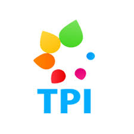

- JAN 2020: Served as an external reviewer in PoPETs 2020.
- SEPT 2019: Achieved 6th position out of 55 submissions at PAN 2019, for model detecting Humans vs Bots on Twitter.
- AUG 2019: Cleared Qualifying exam of PhD.
- JUL 2019: Presented our paper at PoPETs in Stockholm, Sweden.
- JUN 2019: Our paper titled "A Girl Has No Name: Automated Authorship Obfuscation using Mutant-X" got published in PoPETs.
- AUG 2018: Joined The University of Iowa for PhD in Computer Science.
- MAY 2018: Graduated from FAST NU (Lahore Campus).
- AUG 2017: Joined LUMS as a Research Assistant under Dr. Fareed Zaffar.
- JUN 2017: Joined TPI LUMS as a ROR Web Developer Intern.
- SEPT 2016: Joined FASTCARE Lahore Chapter as a lead Graphic Designer.
- MAR 2016: Joined NUCES ACM Lahore Chapter as a Graphic Designer.
- AUG 2014: Started Bachelor's in Computer Science from FAST NU (Lahore Campus).
Asad Mahmood
I am a second-year PhD student in the department of Computer Science at The University of Iowa. I am advised by Dr. Padmini Srinivasan and co-advised by Dr. Zubair Shafiq from The University of Iowa. My research is focused on using Natural Language Processing and Machine Learning techniques to achieve user privacy. I also have a keen interest in the fields of Data Science and Software Engineering. Previously, I worked at TPI Lab in LUMS under the supervision of Dr. Fareed Zaffar.
I love to play all kinds of sports. Specifically, I like Soccer, Squash and Cricket. I also love hiking.
Highlights
A Girl Has No Name: Automated Authorship Obfuscation using Mutant-X (PoPETs 2019)
Asad Mahmood, Faizan Ahmed, Zubair Shafiq, Padmini Srinivasan and Fareed Zaffar

Stylometric authorship attribution aims to identify an anonymous or disputed document’s author by examining its writing style. The development of powerful machine learning based stylometric authorship attribution methods presents a serious privacy threat for individuals such as journalists and activists who wish to publish anonymously. Researchers have proposed several authorship obfuscation approaches that try to make appropriate changes (e.g. word/phrase replacements) to evade attribution while preserving semantics.
A Girl Has No Name: Automated Authorship Obfuscation using Mutant-X (PoPETs 2019)
Asad Mahmood, Faizan Ahmed, Zubair Shafiq, Padmini Srinivasan and Fareed Zaffar
Stylometric authorship attribution aims to identify an anonymous or disputed document’s author by examining its writing style. The development of powerful machine learning based stylometric authorship attribution methods presents a serious privacy threat for individuals such as journalists and activists who wish to publish anonymously. Researchers have proposed several authorship obfuscation approaches that try to make appropriate changes (e.g. word/phrase replacements) to evade attribution while preserving semantics.
Predictive Modelling on Stocks Data
Flask application that trains different ML Models on stock prices and then show it on a plot.

This flask based tool compares the predictive modelling power of different Machine/Deep Learning models. For dataset, i have opening, high, low and closing values for different stocks like AAL, AAP, AAPL. Then to train different models, tool provides with a bunch of options like Random Forests, K Nearest Neighbors, SVM, LSTM etc.. Models are implemented using scikit-learn and keras. Performance of each chosen model is shown using Chart.js library.
A Girl Has No Name: Automated Authorship Obfuscation using Mutant-X (PoPETs 2019)
Asad Mahmood, Faizan Ahmed, Zubair Shafiq, Padmini Srinivasan and Fareed Zaffar
Stylometric authorship attribution aims to identify an anonymous or disputed document’s author by examining its writing style. The development of powerful machine learning based stylometric authorship attribution methods presents a serious privacy threat for individuals such as journalists and activists who wish to publish anonymously. Researchers have proposed several authorship obfuscation approaches that try to make appropriate changes (e.g. word/phrase replacements) to evade attribution while preserving semantics.
A Girl Has No Name: Automated Authorship Obfuscation using Mutant-X (PoPETs 2019)
Asad Mahmood, Faizan Ahmed, Zubair Shafiq, Padmini Srinivasan and Fareed Zaffar
Stylometric authorship attribution aims to identify an anonymous or disputed document’s author by examining its writing style. The development of powerful machine learning based stylometric authorship attribution methods presents a serious privacy threat for individuals such as journalists and activists who wish to publish anonymously. Researchers have proposed several authorship obfuscation approaches that try to make appropriate changes (e.g. word/phrase replacements) to evade attribution while preserving semantics.
A Girl Has No Name: Automated Authorship Obfuscation using Mutant-X (PoPETs 2019)
Asad Mahmood, Faizan Ahmed, Zubair Shafiq, Padmini Srinivasan and Fareed Zaffar
Stylometric authorship attribution aims to identify an anonymous or disputed document’s author by examining its writing style. The development of powerful machine learning based stylometric authorship attribution methods presents a serious privacy threat for individuals such as journalists and activists who wish to publish anonymously. Researchers have proposed several authorship obfuscation approaches that try to make appropriate changes (e.g. word/phrase replacements) to evade attribution while preserving semantics.
A Girl Has No Name: Automated Authorship Obfuscation using Mutant-X (PoPETs 2019)
Asad Mahmood, Faizan Ahmed, Zubair Shafiq, Padmini Srinivasan and Fareed Zaffar
Stylometric authorship attribution aims to identify an anonymous or disputed document’s author by examining its writing style. The development of powerful machine learning based stylometric authorship attribution methods presents a serious privacy threat for individuals such as journalists and activists who wish to publish anonymously. Researchers have proposed several authorship obfuscation approaches that try to make appropriate changes (e.g. word/phrase replacements) to evade attribution while preserving semantics.
A Girl Has No Name: Automated Authorship Obfuscation using Mutant-X (PoPETs 2019)
Asad Mahmood, Faizan Ahmed, Zubair Shafiq, Padmini Srinivasan and Fareed Zaffar
Stylometric authorship attribution aims to identify an anonymous or disputed document’s author by examining its writing style. The development of powerful machine learning based stylometric authorship attribution methods presents a serious privacy threat for individuals such as journalists and activists who wish to publish anonymously. Researchers have proposed several authorship obfuscation approaches that try to make appropriate changes (e.g. word/phrase replacements) to evade attribution while preserving semantics.
A Girl Has No Name: Automated Authorship Obfuscation using Mutant-X (PoPETs 2019)
Asad Mahmood, Faizan Ahmed, Zubair Shafiq, Padmini Srinivasan and Fareed Zaffar
Stylometric authorship attribution aims to identify an anonymous or disputed document’s author by examining its writing style. The development of powerful machine learning based stylometric authorship attribution methods presents a serious privacy threat for individuals such as journalists and activists who wish to publish anonymously. Researchers have proposed several authorship obfuscation approaches that try to make appropriate changes (e.g. word/phrase replacements) to evade attribution while preserving semantics.
A Girl Has No Name: Automated Authorship Obfuscation using Mutant-X (PoPETs 2019)
Asad Mahmood, Faizan Ahmed, Zubair Shafiq, Padmini Srinivasan and Fareed Zaffar
Stylometric authorship attribution aims to identify an anonymous or disputed document’s author by examining its writing style. The development of powerful machine learning based stylometric authorship attribution methods presents a serious privacy threat for individuals such as journalists and activists who wish to publish anonymously. Researchers have proposed several authorship obfuscation approaches that try to make appropriate changes (e.g. word/phrase replacements) to evade attribution while preserving semantics.
Experience
Graduate Research Assistant
The
University of Iowa
Research revolves around using Natural Language Processing and Machine Learning to enhance user privacy. Projects include:
- Mutant-X: An automated authorship obfuscation tool made using sentiment preserving word embeddings and genetic algorithms (GAs).
- Twitter Humans v Bots: A SVM based predictive model which, given a tweet, can classify it as written by human or bot with an accuracy of 91%.
- Obfuscation Detection: A tool which uses the power or pre-trained language models like BERT and GPT-2 to detect whether a given text is Obfuscated or not.
August 2018 - Present
Teaching Assistant
The
University of Iowa
Duties include checking assignments and leading a discussion session. Courses include:
- Computer Science Fundamentals
- Object Oriented Software Development
- Informatics Project
January 2019 - Present
Research Assistant
Lahore
University of Management Sciences (LUMS)
Worked under Dr. Fareed Zaffar on projects related to Data Science and Machine Learning. Projects include:
- Reverse Image Search tool using pre-trained VGG-19 and google's, im2txt model.
- Automated detection of in-appropriate video content on YouTube Kids.
- Enhancement of the ad-verification system for OLX Pakistan.
- In-game analysis of soccer matches through a proprietary dataset of events and tracking data of 6000 soccer matches across four different leagues.
August 2017 - March 2018
Web Developer Intern

Technology for People Initiative (TPI) LUMSWorked as a backend Web Developer on a ROR based dataset visualization tool called Statistan using NoSQL (MongoDB).
June 2017 - July 2017
Education
The University of Iowa
PhD in Computer Science
GPA: 3.26
August 2018 - Present
 National University
of Computer and Emerging Science (FAST)
National University
of Computer and Emerging Science (FAST)
Bachelor's in Computer Science
GPA: 3.04
August 2014 - May 2018
Garrison Degree College
Pre-Engineering (High School)
GPA: 3.33
August 2012 - May 2014
The University of Iowa
Hover over meNational University of Computing and Emerging Science (FAST)
Hover over meMOOCs
Hover over meSkills
Programming Languages & Tools
Workflow
- Mobile-First, Responsive Design
- Cross Browser Testing & Debugging
- Cross Functional Teams
- Agile Development & Scrum
Interests
Apart from being a web developer, I enjoy most of my time being outdoors. In the winter, I am an avid skier and novice ice climber. During the warmer months here in Colorado, I enjoy mountain biking, free climbing, and kayaking.
When forced indoors, I follow a number of sci-fi and fantasy genre movies and television shows, I am an aspiring chef, and I spend a large amount of my free time exploring the latest technology advancements in the front-end web development world.